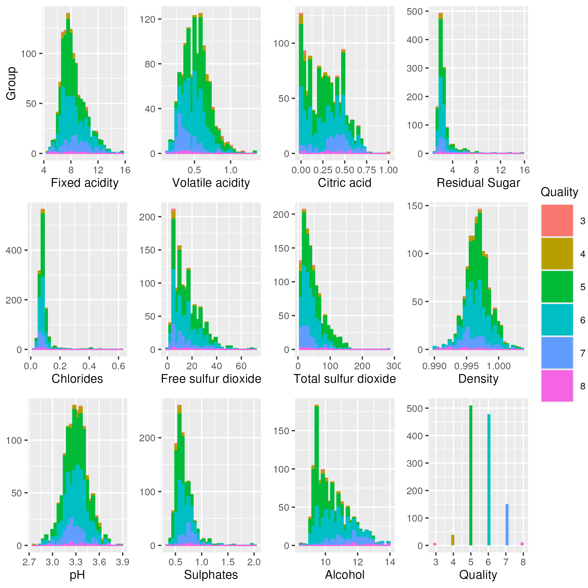
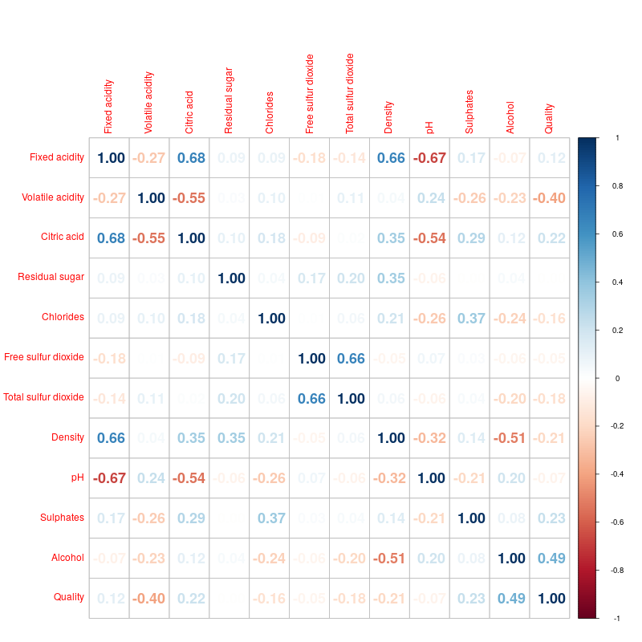
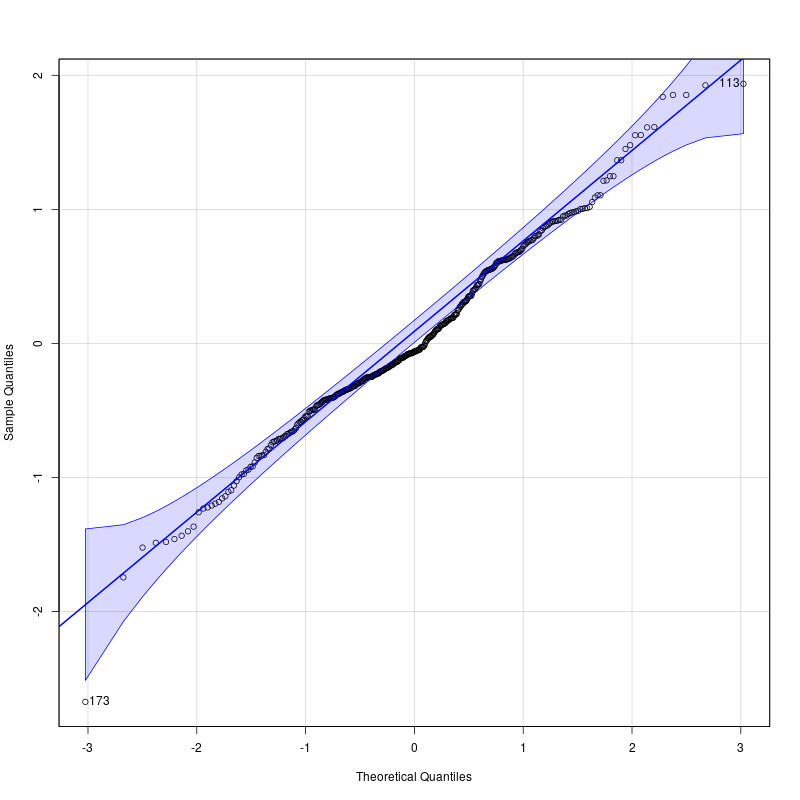

| FA | VA | CA | RS | C | F-SO2 | T-SO2 | D | pH | SO2-4 | ALC | Quality |
|---|---|---|---|---|---|---|---|---|---|---|---|
| 7.4 | 0.70 | 0.00 | 1.9 | 0.076 | 11 | 34 | 0.998 | 3.51 | 0.56 | 9.4 | 5 |
| 7.8 | 0.88 | 0.00 | 2.6 | 0.098 | 25 | 67 | 0.997 | 3.20 | 0.68 | 9.8 | 5 |
| 7.8 | 0.76 | 0.04 | 2.3 | 0.092 | 15 | 54 | 0.997 | 3.26 | 0.65 | 9.8 | 5 |
| 11.2 | 0.28 | 0.56 | 1.9 | 0.075 | 17 | 60 | 0.998 | 3.16 | 0.58 | 9.8 | 6 |
| 7.4 | 0.70 | 0.00 | 1.9 | 0.076 | 11 | 34 | 0.998 | 3.51 | 0.56 | 9.4 | 5 |
| 7.4 | 0.66 | 0.00 | 1.8 | 0.075 | 13 | 40 | 0.998 | 3.51 | 0.56 | 9.4 | 5 |
Predicting Wine Quality Using Multiple Linear Regression
Summary
This project analyzes different properties of wine and analyzes which properties affect the quality of wine positively and which properties affect it negatively, in order to predict red wine quality. We applied a multiple linear regression on a public-use dataset to discover how each property affects the quality of wine. Splitting the dataset into a 75/25 training/testing split, and applying a specified recipe for a multivariate regression, we obtained decent RMSPE and MAE values of 0.67 and 0.52 respectively, but a mediocre R-squared value of 0.32. We discover that the fixed acidity, residual sugar, free sulphur dioxide, sulphates, and the alcohol properties tend to increase the wine quality, while the volatile acidity, citric acid, chlorides, total sulphur dioxide, density, and pH properties tend to reduce the wine quality. Future work should be done on selecting significant predictors only.
Introduction
Wine is entrenched in many cultures and remains a strong industry worldwide (Elfman 2019; WineinModeration, n.d.). Technological innovations have supported the growth of the wine industry, especially in the realm of certification and quality assessment (Cortez et al. 2009). One prominent innovation is the use of laboratory testing to relate the physicochemical properties of wine to human sensory perceptions (Cortez et al. 2009; Luque et al. 2023). Examples of physicochemical indicators include pH and and residual sugar. Using data to model complex wine perceptions is a daunting task, but it can benefit wine production by flagging the most important properties to consider and informing price setting (Cortez et al. 2009).
Thus, our key question is: Can we use multiple linear regression and various physicochemical indicators to predict the quality of red wine?
To answer whether a full regression model is viable, we use a dataset on red wine quality from the UCI Machine Learning Repository. The dataset comprises of 12 variables (11 physicochemical indicators and 1 quality indicator) and contains 1599 instances of red vinho verde, a popular wine from Portugal. Each instance of wine was assessed by at least three sensory assessors and scored on a ten-point scale that ranges from “very bad” to “excellent”; the wine quality for each instance is determined by the median of these scores (Cortez et al. 2009). The data was collected by the CVRVV, an inter-professional organisation dedicated to the promotion of vinho verde, from May 2004 to February 2007.
Methods
Preview of Data
The data was loaded from the UCI Machine Learning Repository. In Table 1, we can see a preview of the first six columns of the dataset.
Where FA is Fixed Acidity, VA is Volatile Acidity, CA is Citric Acid, RS is Residual Sugar, C is Chlorides, F-SO2 is Free Sulfur Dioxide, T-SO2 is Total Sulfur Dioxide, D is Density, pH is the potential of Hydrogen, SO2-4 is sulphates, and ALC is the alcohol content.
Exploratory Data Analysis
The data was split into a training set (75% of the dataset) and a testing set (the remaining 25%). Thus, the training set had 1198 obervations and the testing set had 401 observations. The training set was used to train our model. The testing set was used to validate the results of the created model.
There were also 0 missing values.
The means of the independent variables for every level of the response variable “quality” were explored in Table 2.
| Quality | FA | VA | CA | RS | C | F-SO2 | T-SO2 | D | pH | SO2-4 | ALC |
|---|---|---|---|---|---|---|---|---|---|---|---|
| 3 | 8.444 | 0.807 | 0.190 | 2.694 | 0.121 | 11.667 | 26.667 | 0.998 | 3.387 | 0.589 | 9.850 |
| 4 | 7.654 | 0.675 | 0.187 | 2.823 | 0.096 | 11.821 | 36.385 | 0.997 | 3.387 | 0.615 | 10.333 |
| 5 | 8.150 | 0.579 | 0.244 | 2.534 | 0.094 | 17.086 | 56.342 | 0.997 | 3.305 | 0.628 | 9.880 |
| 6 | 8.411 | 0.495 | 0.275 | 2.451 | 0.084 | 15.855 | 41.370 | 0.997 | 3.313 | 0.677 | 10.609 |
| 7 | 8.851 | 0.391 | 0.380 | 2.710 | 0.075 | 13.493 | 34.152 | 0.996 | 3.282 | 0.749 | 11.484 |
| 8 | 7.709 | 0.426 | 0.334 | 2.545 | 0.067 | 15.727 | 40.727 | 0.994 | 3.319 | 0.771 | 12.482 |
Where the columns are defined the same as in Table 1.
Exploratory Data Analysis Visualization
Before we began on the analysis, we wanted to visualize our dataset to get a general understanding of our data and check for valid assumptions and potential issues we have to alleviate later on.
One of the assumptions of MLR is normality. Without normality, it could affect the coefficient estimates obtained and standard errors would be inflated. We checked the distribution of each input variable through a histogram in Figure 1.

Each of the qualities we analyzed are plotted together in Figure 1 to get an understanding of several assumptions we are making. For some of them, (such as density, pH, volatile_acidity, etc), a normality assumption is reasonable. For others, (such as citric_acid, total_sulfur_dioxide, etc) it may be a bit harder to assume normality. Each of the different qualities are also coloured in, so the different densities among the quality levels can be visualized.
The very last plot is a visual for the count of how many wines are in each quality level. Unfortunately, there does not appear to be a consistent count for each quality level, rather most of the wines in the dataset have qualities between 5 and 7. This could affect the performance of the model.
Next, we looked at how correlated the variables in the dataset are against each other in Figure 2.

Figure 2 suggests that the values all tend to be more independent of each other than some others. For quality, the values that are the most correlated appear to be volatile acidity and the alcohol content. This suggests that those may be the best predictors, and the others may be a bit weaker.
Multiple Linear Rgression
We specified a linear regression model and then a recipe. In the recipe, we stated “quality” as our response variable, and the other 11 variables as input variables. We then set up the workflow and trained the model using our training set.
In Table 3, we can see the obtained coefficients from the model:
| term | estimate | std.error | statistic | p.value |
|---|---|---|---|---|
| (Intercept) | 56.8281842 | 25.0287467 | 2.270517 | 0.0233550 |
| fixed_acidity | 0.0671384 | 0.0305929 | 2.194577 | 0.0283873 |
| volatile_acidity | -1.0627342 | 0.1420083 | -7.483607 | 0.0000000 |
| citric_acid | -0.3120087 | 0.1681621 | -1.855404 | 0.0637865 |
| residual_sugar | 0.0274220 | 0.0176734 | 1.551591 | 0.1210269 |
| chlorides | -1.9337484 | 0.4867008 | -3.973177 | 0.0000752 |
| free_sulfur_dioxide | 0.0026981 | 0.0024772 | 1.089171 | 0.2762999 |
| total_sulfur_dioxide | -0.0023257 | 0.0008488 | -2.740096 | 0.0062343 |
| density | -53.2978193 | 25.5587011 | -2.085310 | 0.0372546 |
| pH | -0.3408037 | 0.2246360 | -1.517137 | 0.1294985 |
| sulphates | 0.8806688 | 0.1279770 | 6.881462 | 0.0000000 |
| alcohol | 0.2613553 | 0.0309245 | 8.451388 | 0.0000000 |
From Table 3, we can see that most of our input variables are statistically significant, as their p-values are < 0.05. However, a couple have p-values that are > 0.05, and thus, are not statistically significant.
- Significant: fixed acidity, sulphates, alcohol, volatile acidity, chlorides, total sulfur dioxide, and density.
- Non-significant: residual sugar, citric acid, free sulfur dioxide, and pH.
The full equation of our linear regression model is (rounded to the nearest 3 decimals):
quality = 56.83 + 0.07 x fixed_acidity -1.06 x volatile_acidity -0.31 x citric_acid + 0.03 x residual_sugar -1.93 x chlorides + 0 x free_sulfur_dioxide 0 x total_sulfur_dioxide -53.3 x density -0.34 x pH 0.88 x sulphates + 0.26 x alcohol
We can also determine the correlation between the input variables and the response variable quality:
- Positively correlated: fixed acidity, residual sugar, free sulfur dioxide, sulphates, and alcohol.
- Negatively correlated: volatile acidity, citric acid, chlorides, total sulfur dioxide, density, and pH.
The model was tested on the testing set. The metrics from the model are in Table 4.
| .metric | .estimator | .estimate |
|---|---|---|
| rmse | standard | 0.6683570 |
| rsq | standard | 0.3212801 |
| mae | standard | 0.5230570 |
Our RMSPE is 0.67 units of quality, which we deem to be a low value. Our mean absolute error is 0.52 units of quality, which we also deem to be a low value. Thus, we believe our model performs relatively well. However, our R^2 is 0.32 which is a low number, indicating that our model does not fit the data as well as hoped.
To assess the validity of our model, we plotted a QQ plot where the theoretical quantiles are plotted against the sample quantiles. This plot shows the normality distribution. A QQ-plot with a straight line would be the ideal one. Our resulting QQ-plot is in Figure 3.

As seen, Figure 3 appears to follow a straight line. There does appear to be a dip from the line near quantiles = 0, and a few outliers (173 and 113), but overall, the normality assumption on our data is reasonable.
Discussion
Summary and Expectations
The purpose of this project was to determine if it was possible to predict red wine quality through a set of 11 physicochemical variables. We applied a multiple linear regression on a public-use dataset to discover how each property affects the quality of wine. Splitting the dataset into a 75/25 training/testing split, and applying a specified recipe for a multivariate regression, we obtained decent RMSPE and MAE values of 0.67 and 0.52 respectively, but a mediocre R-squared value of 0.32.
We discover that the fixed acidity, residual sugar, free sulphur dioxide, sulphates, and the alcohol properties tend to increase the wine quality, while the volatile acidity, citric acid, chlorides, total sulphur dioxide, density, and pH properties tend to reduce the wine quality. Furthermore, only fixed acidity, sulphates, alcohol, volatile acidity, chlorides, total sulfur dioxide, and density were deemed to be significant predictors.
From Figure 2, it was expected that alcohol and volatile acidity would be significant predictors for quality. And in fact, these variables were statistically significant as their p values was < 0.05. However, the model’s fit performed worse than expected, with a very low R-squared value.
Impacts and Future Questions
The multivariate regression analysis conducted on the wine quality dataset aimed to uncover the impacts of various factors such as the alcohol content, the acidity, and the amount of sugar on the overall quality of wine. While the accuracy of our model is a bit mediocre at best, it is still a valuable analysis that can uncover proposals of changing winemaking practices and consumer preferences.
Future research should attempt to improve the accuracy of our model, such as incorporating better model selection techniques such as stepwise regression, or to restrict the coefficients through LASSO or Ridge regression. Alternate strategies could be to adapt a non-parametric (i.e. classification) analysis rather than a regression analysis on the data. More data could also be collected to further the amount of predictors and the amount of data there are.
For those who are in the winemaking business, this should propose implications on alternate winemaking techniques to better increase the quality of the wine that is being manufactured, and may ask why some qualities negatively affect the quality of the wine and why others positively affect the quality.
References
Cortez, Paulo, António Cerdeira, Fernando Almeida, Telmo Matos, and José Reis. 2009. “Modeling Wine Preferences by Data Mining from Physicochemical Properties.” Decision Support Systems 47 (4): 547–53. https://doi.org/https://doi.org/10.1016/j.dss.2009.05.016.
Elfman, Zachary. 2019. “Libation Frontiers – a Deep Dive into the World Wine Industry: Toptal®.” Toptal Finance Blog. Toptal. https://www.toptal.com/finance/market-sizing/wine-industry.
Luque, Amalia, Mirko Mazzoleni, Francisco Zamora-Polo, Antonio Ferramosca, Juan Ramón Lama, and Fabio Previdi. 2023. “Determining the Importance of Physicochemical Properties in the Perceived Quality of Wines.” IEEE Access 11: 115430–49. https://doi.org/10.1109/ACCESS.2023.3325676.
WineinModeration. n.d. “Culture of Wine.” Wine in Moderation. https://www.wineinmoderation.eu/culture.